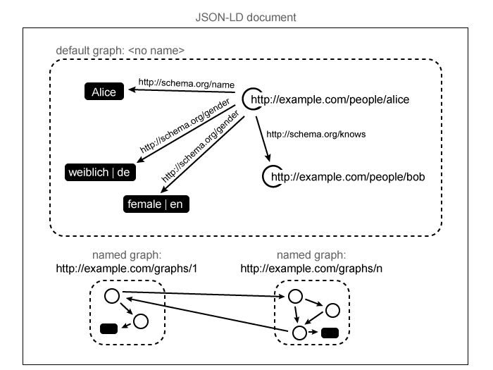

JSON has proven to be a highly useful object serialization and messaging format.
In an attempt to harmonize the representation of
This document has been under development for over 20 months in the JSON for Linking Data Community Group. The document has recently been transferred to the RDF Working Group for review, improvement, and publication along the Recommendation track. The specification has undergone significant development, review, and changes during the course of the last 20 months.
There are several independent interoperable implementations of this specification. There is a fairly complete test suite and a live JSON-LD editor that is capable of demonstrating the features described in this document. While development on implementations, the test suite and the live editor will continue, they are believed to be mature enough to be integrated into a non-production system at this point in time with the expectation that they could be used in a production system within the next year.
There are a number of ways that one may participate in the development of this specification:
JSON-LD is designed as a lightweight syntax to express
Developers that require any of the facilities listed above or need to serialize an RDF graph or dataset [[RDF-CONCEPTS]] in a JSON-based syntax will find JSON-LD of interest. The syntax is designed to not disturb already deployed systems running on JSON, but provide a smooth upgrade path from JSON to JSON-LD.
This document is a detailed specification for a serialization of Linked Data in JSON. The document is primarily intended for the following audiences:
This specification does not describe the programming interfaces for the JSON-LD Syntax. The specification that describes the programming interfaces for JSON-LD documents is the JSON-LD Application Programming Interface [[JSON-LD-API]].
To understand the basics in this specification you must first be familiar with JSON, which is detailed in [[!RFC4627]].
A number of design goals were established before the creation of this markup language:
@context
and @id) to use the basic functionality in JSON-LD.This document uses terms defined in JSON [[!RFC4627]] described in the following list. Refer to the JSON grammar section in JSON for formal definitions.
@context where the value, or the @id of the
value, is @value, @list, or
@set is set to JSON-LD specifies a number of syntax tokens and
@context@context keyword is described in detail in the section titled
.@id@value@language@type@container@list@set@vocab@type with a common prefix
@graph:For the avoidance of doubt, all keys,
The JSON-LD Syntax specification describes the conformance criteria for JSON-LD documents (relevant to authors and authoring tool implementors).
A
The key words MUST, MUST NOT, REQUIRED, SHALL, SHALL NOT, SHOULD, SHOULD NOT, RECOMMENDED, NOT RECOMMENDED, MAY, and OPTIONAL in this Recommendation have the meaning defined in [[!RFC2119]].
In JSON-LD, a
The Web uses name may
map directly to the IRI http://xmlns.com/foaf/0.1/name. This allows JSON-LD documents to be constructed
using the common JSON practice of simple key-value pairs while ensuring that the data is useful outside of the
page, API or database in which it resides.
Note that, to avoid forward-compatibility issues, terms starting with an @ character are to be avoided as they might be used as keywords in future versions of JSON-LD. Furthermore, the use of empty "")
is discouraged as not all programming languages are able to handle empty
property names.
In a JSON-LD document, the mapping between
Let's assume that a developer starts with the following JSON document:
The developer can add a single line to the JSON document above to reference the context and transform it into a JSON-LD document:
The additions above transform the previous JSON document into a JSON document
with added semantics because the @context specifies how the
name, homepage, and depiction
terms map to
External JSON-LD context documents may contain extra information
located outside of the @context key, such as documentation about the
@context value is simply discarded when the document
is used as an external JSON-LD context document
(see ).
Contexts may also be specified in-line. This ensures that
Contexts may be used at any time a
This is useful when an author would like to use an existing context
and add application-specific terms to the existing context. Duplicate context
In the example above, the name prefix is overridden in the
more deeply nested details structure. Note that this is
rarely a good authoring practice and is typically used when there exist
legacy applications that depend on the specific structure of the
null,
the
A null
effectively resets the
To ensure the best possible performance, it is a best practice to
put the
If a set of
Doing this allows JSON to be unambiguously machine-readable without
requiring developers to drastically change their workflow. A
The example above does not use the @id @id
keyword unless the data is not intended to be linked to from other data sets.
@vocab
mapping in the active context also @id or @type.@id.IRIs may be represented as an
An
IRIs can be expressed directly in the key position like so:
In the example above, the key http://xmlns.com/foaf/0.1/name is interpreted
as an :) and the 'http'
Term expansion occurs for IRIs if the value matches a
JSON keys that do not expand to an absolute IRI are ignored, or removed
in some cases, by the [[JSON-LD-API]]. However, JSON keys that do not include
a mapping in the
prefix:suffix
combination, and the prefix matches a
foaf:name above will automatically expand out to the IRI
http://xmlns.com/foaf/0.1/name. See for more details.
It is often common that all types and properties come from the same vocabulary. JSON-LD's
@vocab keyword allows to set a common prefix to be used for all properties and types
that neither match a
An @id keyword:
Specifying a @id key is used to identify that @id, it
is called a
If type @context for
a particular
In the example above, even though the value
http://manu.sporny.org/ is expressed as a JSON
To be able to externally reference nodes in a graph, it is important that each
JSON-LD documents may also contain descriptions of other nodes, so it is necessary to be able to uniquely identify each node which may be externally referenced.
The node of a @id
The example above contains a http://example.org/people#joebob.
Once defined, the @id key:
The type of a particular node can be specified using the @type
A node can be assigned more than one type by using the following markup pattern:
The value of a @type key may also be a
At times, it is important to annotate a @language key in the @context or in a
The example above would associate the ja language
code with the two
It is possible to override the default language by using an
It is also possible to override the default language or specify a plain
value by omitting the @language tag or setting it to
null when expressing the
Please note that language associations can only be applied to plain
literal
To clear the default language for a subtree, @language can
be set to null in a
JSON-LD allows one to associate language information with
A
JSON-LD has a number of features that provide functionality above and beyond the core functionality described above. The following section describes this advanced functionality in more detail.
A :) which is
similar to the CURIE Syntax
in [[RDFA-CORE]]. The foaf may be used as a short
hand for the Friend-of-a-Friend vocabulary, which is identified using
the IRI http://xmlns.com/foaf/0.1/. A developer may append
any of the FOAF foaf:name would
be expanded out to the IRI http://xmlns.com/foaf/0.1/name.
Instead of having to remember and type out the entire IRI, the developer
can instead use the prefix in their JSON-LD markup.
Terms are interpreted as //, as in
http://example.com). To generate the full :). If the _), the IRI remains unchanged.
Consider the following example:
In this example, two different prefix:suffix notation.
It's also possible to use compact IRIs within the context as shown in the following example:
A value with an associated type, also known as a
@type @context section.The first example uses the @type keyword to associate a
type with a particular @context:
The modified key's value above is automatically type coerced to a
datetime value because of the information specified in the
@context.
The second example uses the expanded form of setting the type information in the body of a JSON-LD document:
Both examples above would generate the value
2010-05-29T14:17:39+02:00 with the type
http://www.w3.org/2001/XMLSchema#dateTime. Note that it is
also possible to use a
The @type
The first use of @type associates a http://schema.org/BlogPosting) with the @id @type associates a http://www.w3.org/2001/XMLSchema#dateTime) with the
value expressed using the @value @value and @type are used in
the same @type
@type
A string with an associated language, also known as a
@language
@context section.@language @context section.term is defined with a @container
@language within
a @context section.The first example uses the @language keyword to associate a
type with a particular @context:
The modified key's value above is automatically
language coerced to a English value because of the information specified in
the @context.
The second example uses the expanded form of setting the language information in the body of a JSON-LD document:
Both examples above would generate the value JSON-LD Syntax
tagged with the language en; which is the [[!BCP47]] code
for the English language.
Systems that support multiple languages often need to express data values in
each language. Typically, such systems also try to ensure that developers have
a programatically easy way to navigate the datastructures for the
language-specific data. In this case,
In the example above, the title is expressed in three languages; English,
Russian, and Japanese. To access the data above in a programming language
supporting dot-notation accessors for object properties, a developer may
use the property.language pattern. For example, to access the
Japanese version of the title, a developer would use the following code
snippet: obj.title.ja.
Ordinary JSON documents can be transformed into JSON-LD documents by referencing
to an external JSON-LD application/json
media type.
In order to use an external context with an ordinary JSON document, an author
MUST specify an http://www.w3.org/ns/json-ld#context link relation.
The referenced document MUST have a top-level @context subtree within that object is added to the top-level
@context
subtree is added to all @context subtree in the referenced document MUST be
discarded.
The following example demonstrates the use of an external context with an ordinary JSON document:
Please note that application/ld+json
media type MUST have all context information, including references to external
contexts, within the body of the document. Contexts linked via a
http://www.w3.org/ns/json-ld#context HTTP Link Header MUST be
ignored for such documents.
Within a
Instead of using a string representation of an IRI, the IRI may be
specified using a @id key,
and a
This allows additional information to be associated with the term. This
may be used for ,
, or to associate language
information with a
The example above would associate 忍者 with the specified default
language code ja, Ninja with the language code
en, and Nindža with the language code cs.
The value of name, Yagyū Muneyoshi wouldn't be
associated with any language code since @language was reset to
Expanded terms may also be defined using @id key, the expanded IRI is determined by performing expansion of the key
within the current
While it is possible to define a
foaf:name expanding to
http://example.org/unrelated#species),
such usage is strongly discouraged.
JSON-LD supports the coercion of values to particular data types.
Type
Type coercion is specified within an
using the @type key. The value of this key expands to an @id may be used as value to indicate
that within the body of a JSON-LD document, a string value of a @id is to be interpreted as an
@type key may be defined within the same context. This means that one may specify a
xsd and then use xsd:integer within the same
context definition.
The example below demonstrates how a JSON-LD author can coerce values to
The markup shown above would generate the following data. The data has no inherent order
except for the values the http://xmlns.com/foaf/0.1/homepage property
which represent an ordered list.
| Subject | Property | Object | Datatype |
|---|---|---|---|
| http://example.com/people#john | http://xmlns.com/foaf/0.1/name | John Smith | |
| http://example.com/people#john | http://xmlns.com/foaf/0.1/age | 41 | http://www.w3.org/2001/XMLSchema#integer |
| http://example.com/people#john | http://xmlns.com/foaf/0.1/homepage | http://personal.example.org/ | |
| http://work.example.com/jsmith/ |
Terms may also be defined using
In this case the @id definition in the term definition is optional, but if it does exist, the prefix:suffix construct)
so that the actual definition of a
Keys in the context are treated as dog and cat both expanded to http://example.com/vocab#animal.
Doing this could be useful for establishing different type coercion or language specification rules. It also allows a http://example.org/zoo should expand to
http://example.org/river, but this usage is discouraged because it would lead to a
great deal of confusion among developers attempting to understand the JSON-LD document.
At times, an author may find that they need to express the same value for multiple properties. The simplest approach to accomplish this goal would be to do the following:
Unfortunately, the approach above produces redundant data and would become a
publishing burden for large data sets.
In these situations, the author may use
a
While the term above is only used once outside of the @context,
the document above is equivalent to the following set of statements:
In general, normal IRI expansion rules apply
anywhere an IRI is expected (see ). Within
a xsd namespace when defining
In this example, the xsd @type coercion
of the age property.
In this example, the foaf:age declares both the
@type associated with the @type associated with the foaf:homepage is determined by looking up the foaf
In order for the foaf:homepage
will not use the { "@type": "@id" } declaration because
foaf:homepage is not the same as
http://xmlns.com/foaf/0.1/homepage. That is,
The only exception for using terms in the
A JSON-LD author can express multiple values in a compact way by using
The markup shown above would result in the following data being generated, each relating the node to an individual value, with no inherent order:
| Subject | Property | Object |
|---|---|---|
| http://example.org/people#joebob | http://xmlns.com/foaf/0.1/nick | joe |
| http://example.org/people#joebob | http://xmlns.com/foaf/0.1/nick | bob |
| http://example.org/people#joebob | http://xmlns.com/foaf/0.1/nick | jaybee |
Multiple values may also be expressed using the expanded form:
The markup shown above would generate the following data, again with no inherent order:
| Subject | Property | Object | Language |
|---|---|---|---|
| http://example.org/articles/8 | http://purl.org/dc/terms/title | Das Kapital | de |
| http://example.org/articles/8 | http://purl.org/dc/terms/title | Capital | en |
As the notion of ordered collections is rather important in data
modeling, it is useful to have specific language support. In JSON-LD,
a list may be represented using the @list
This describes the use of this @container
to @list in the
List of lists are not allowed in this version of JSON-LD. This decision was made due to the extreme amount of added complexity when processing lists of lists.
Similarly to @list, there exists the @set to
describe unordered sets. While its use in the body of a JSON-LD document
represents just syntactic sugar optimized away when processing
the document, it is very helpful when used within the context of a document.
Values of terms associated with a @set or @list container
are always represented in the form of an
The use of @container in the body of a JSON-LD
document has no meaning and is not allowed by the JSON-LD grammar (see ).
The example shows two nodes related by a property from the first node:
A
At times, it is necessary to make statements about a @graph
@graph @id
The example above expresses a named http://example.org/graphs/73. That graph is composed of the
statements about Manu and Gregg. Metadata about the graph itself is also
expressed via the generatedAt property, which specifies when
the graph was generated. An alternative view of the
information above is represented in table form below:
| Graph | Subject | Property | Object | Datatype |
|---|---|---|---|---|
| http://example.org/graphs/73 | http://example.org/graphs/73 | http://www.w3.org/ns/prov#generatedAtTime | 2012-04-09 | http://www.w3.org/2001/XMLSchema#date |
| http://example.org/graphs/73 | http://manu.sporny.org/i/public | http://www.w3.org/2001/XMLSchema#type | http://xmlns.com/foaf/0.1/Person | |
| http://example.org/graphs/73 | http://manu.sporny.org/i/public | http://xmlns.com/foaf/0.1/name | Manu Sporny | |
| http://example.org/graphs/73 | http://manu.sporny.org/i/public | http://xmlns.com/foaf/0.1/knows | http://greggkellogg.net/foaf#me | |
| http://example.org/graphs/73 | http://greggkellogg.net/foaf#me | http://www.w3.org/2001/XMLSchema#type | http://xmlns.com/foaf/0.1/Person | |
| http://example.org/graphs/73 | http://greggkellogg.net/foaf#me | http://xmlns.com/foaf/0.1/name | Gregg Kellogg | |
| http://example.org/graphs/73 | http://greggkellogg.net/foaf#me | http://xmlns.com/foaf/0.1/knows | http://manu.sporny.org/i/public |
When @graph is used in a document's top-level object which
has no other
In this case, embedding doesn't work as each @graph @context within each
At times, it becomes necessary to be able to express information without
being able to specify the node. This type of node is called a @id _ (underscore)
The example above would set the node to _:foo, which can
then be used elsewhere in the JSON-LD document to refer back to the
Each of the JSON-LD @context, may be aliased to application-specific
keywords. This feature allows legacy JSON content to be utilized
by JSON-LD by re-using JSON keys that already exist in legacy documents.
This feature also allows developers to design domain-specific implementations
using only the JSON-LD
In the example above, the @id and @type
At times, it becomes necessary to explicitly ignore data expressed in JSON
documents because it has no semantic meaning. For this purpose, an author
may associate the
In the example above, the author has used @vocab as the base
IRI for all terms in the document, but has expressed that the
databaseId value should not be processed by the JSON-LD processor
by associating it with the
The JSON-LD API [[JSON-LD-API]] defines an method for expanding a
JSON-LD document.
Expansion is the process of taking a JSON-LD document and applying a
@context such that all IRIs, types, and values
are expanded so that the @context is no longer necessary.
For example, assume the following JSON-LD input document:
Running the JSON-LD Expansion algorithm against the JSON-LD input document provided above would result in the following output:
Expanded document form is useful when an application has to process input data in a deterministic form. It has been optimized to ensure that the code that developers have to write is minimized compared to the code that would have to be written to operate on .
The JSON-LD API [[JSON-LD-API]] defines a method for compacting a JSON-LD document. Compaction is the process of taking a JSON-LD document and applying a context such that the most compact form of the document is generated. JSON is typically expressed in a very compact, key-value format. That is, full IRIs are rarely used as keys. At times, a JSON-LD document may be received that is not in its most compact form. JSON-LD, via the API, provides a way to compact a JSON-LD document.
For example, assume the following JSON-LD input document:
Additionally, assume the following developer-supplied JSON-LD context:
Running the JSON-LD Compaction algorithm given the context supplied above against the JSON-LD input document provided above would result in the following output:
The compaction algorithm enables a developer to map any document into an
application-specific compacted form by first .
While the context provided above mapped http://xmlns.com/foaf/0.1/name
to name, it could have also mapped it to any arbitrary string
provided by the developer. This powerful mechanism allows the developer to
re-shape the incoming JSON data into a format that is optimized for
their application.
JSON-LD is a serialization format for
_:.
Figure 1: An illustration of JSON-LD's data model.
This section is an attempt to formalize a normative grammar for JSON-LD.
This appendix restates the syntactic conventions described in the previous sections more formally.
The JSON-LD context allows id as an alias for @id,
that alias may be legitimately used as a substitution for @id.
Note that
A
A
A
@value, @list,
or @set keywords, or@graph keyword and is
the top-most A
@context,@graph,@id, or@typeIf the @context
key, its value MUST be one of the following:
If the @id key, its value MUST be
an @id values.
If the @type
key, its value MUST be either
an @type values.
If the @graph
key, its value MUST be
a @id keyword,
its value is used as the label of a named graph.
See for further discussion on
@graph values.
As a special case, if a @graph and @context, and the
A
Keys in a
A
A
To avoid forward-compatibility issues, a @ character as future versions of JSON-LD may introduce
additional "") is discouraged as not all programming languages
are able to handle empty property names.
A @container set to @language. The keys of a
An
An @value key. It MAY also contain a @type or
a @language key but MUST NOT contain both a @type
and a @language key. An @value, @language, and
@type. An @type key is called an @language key
is called an
The value of the @value key MUST be either a
The value of the @language key MUST have the lexical form
described in [[!BCP47]], or be
The value of the
@type key MUST be a null.
A @set keyword, when used in the body of a JSON-LD document,
represents just syntactic sugar which is optimized away when processing the document.
However, it is very helpful when used within the context of a document. Values
of terms associated with a @set or @list container
will always be represented in the form of an array when a document is processed -
even if there is just a single value that would otherwise be optimized to
a non-array form in compact document form.
This simplifies post-processing of the data as the data is always in array form.
A @list.
A @set.
In both cases, the value associated with the key MUST be an
A
A @language or @vocab
If the @language key,
its value MUST have the lexical form described in [[!BCP47]] or be
If the @vocab key,
its value MUST have the lexical form of
An
An @id,
@type, @language or @container. An
@id MUST expand to an
If the @id key.
If the @id
If the @type @id
If the @language
If the @container @list, @set, @language, or be @language, when the @context, the
associated value MUST be a
The RDF data model, as outlined in [[!RDF-CONCEPTS]], is an abstract syntax for
representing a directed graph of information. It is a subset of
Summarized these differences mean that JSON-LD is capable of serializing any RDF graph or dataset and most, but not all, JSON-LD documents can be transformed to RDF. A complete description of the algorithms to convert from RDF to JSON-LD and from JSON-LD to RDF is included in the JSON-LD API [[JSON-LD-API]] specification.
Even though JSON-LD serializes RDF datasets, it can also be used as a RDF graph source. In that case, a consumer MUST only use the default graph and ignore all named graphs. This allows servers to expose data in, e.g., both Turtle and JSON-LD using content negotiation.
The JSON-LD markup examples below demonstrate how JSON-LD can be used to
express semantic data marked up in other linked data formats such as Turtle,
RDFa, Microformats, and Microdata. These sections are merely provided as
evidence that JSON-LD is very flexible in what it can express across different
The following are examples of converting RDF expressed in [[TURTLE-TR]] into JSON-LD.
The JSON-LD context has direct equivalents for the Turtle
@prefix declaration:
JSON-LD has no equivalent for the Turtle @base declaration.
Both Turtle and JSON-LD allow embedding, although Turtle only allows embedding of
Both JSON-LD and Turtle can represent sequential lists of values.
The following example describes three people with their respective names and homepages.
An example JSON-LD implementation using a single
The following example uses a simple Microformats hCard example to express how the Microformat is represented in JSON-LD.
The representation of the hCard expresses the Microformat terms in the
url and fn
properties. Also note that the Microformat to JSON-LD processor has
generated the proper URL type for http://tantek.com/.
The microdata example below expresses book information as a microdata Work item.
Note that the JSON-LD representation of the Microdata information stays
true to the desires of the Microdata community to avoid contexts and
instead refer to items by their full
This section is included merely for standards community review and will be submitted to the Internet Engineering Steering Group if this specification becomes a W3C Recommendation.
formexpanded. If no form is
specified in an HTTP request header to an HTTP server, the server MAY
choose any form. If no form is specified in an HTTP response, the form
MUST NOT be assumed to take any particular form.profileprofile
parameter MAY also be used by clients to express their preferences in the
content negotiation process. It is RECOMMENDED that profile IRIs are
dereferenceable and provide useful documentation at that IRI. This
specification, however, does not define any formats for such profile
descriptions.
application/json MIME media type.eval()
function. It is RECOMMENDED that a conforming parser does not attempt to
directly evaluate the JSON-LD serialization and instead purely parse the
input into a language-native data structure. Fragment identifiers used with application/ld+json
resources MAY identify a node in a
A large amount of thanks goes out to the JSON-LD Community Group participants who worked through many of the technical issues on the mailing list and the weekly telecons - of special mention are Niklas Lindström, François Daoust, and Zdenko 'Denny' Vrandečić. The editors would like to thank Mark Birbeck, who provided a great deal of the initial push behind the JSON-LD work via his work on RDFj. The work of Dave Lehn and Mike Johnson are appreciated for reviewing, and performing several implementations of the specification. Ian Davis is thanked for this work on RDF/JSON. Thanks also to Nathan Rixham, Bradley P. Allen, Kingsley Idehen, Glenn McDonald, Alexandre Passant, Danny Ayers, Ted Thibodeau Jr., Olivier Grisel, Josh Mandel, Eric Prud'hommeaux, David Wood, Guus Schreiber, Pat Hayes, Sandro Hawke, and Richard Cyganiak for their input on the specification.